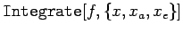
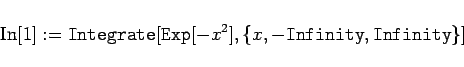
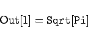
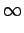
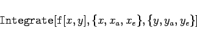
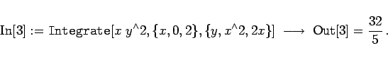

Inhalt Index DeskTop Bronstein

 Computeralgebrasysteme Anwendungen von Computeralgebrasystemen Differential- und Integralrechnung Mathematica
Computeralgebrasysteme Anwendungen von Computeralgebrasystemen Differential- und Integralrechnung Mathematica


Mit der Anweisung  kann Mathematica das bestimmte Integral der Funktion f(x) mit der unteren Grenze xa und der oberen Grenze xe bestimmen.
| Beispiel A |
|


|
| Beispiel B |
|
Gibt man aber ein |
| = | |||
| = |  |
Hinweis: Bei der Berechnung bestimmter Integrale ist Vorsicht geboten. Wenn man die Eigenschaften des Integranden nicht kennt, sollte man sich vor der Integration eine Graphik der Funktion im interessierenden Bereich anfertigen.
Zweifache bestimmte Integrale ruft man mit der Anweisung
|  | (20.73) |
auf. Die Abarbeitung erfolgt von rechts nach links, zunächst wird also die Integration über y durchgeführt. Die Grenzen ya und ye können daher Funktionen von x sein, die in die Stammfunktion eingesetzt werden. Danach wird das Integral über x bestimmt.
| Beispiel |
|
Für das Integral A zur Berechnung einer Fläche zwischen Parabel und einer, diese zweifach schneidenden Geraden, in Abschnitt Berechnung des Doppelintegrals erhält man 
|